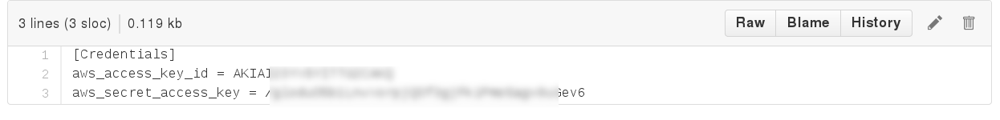
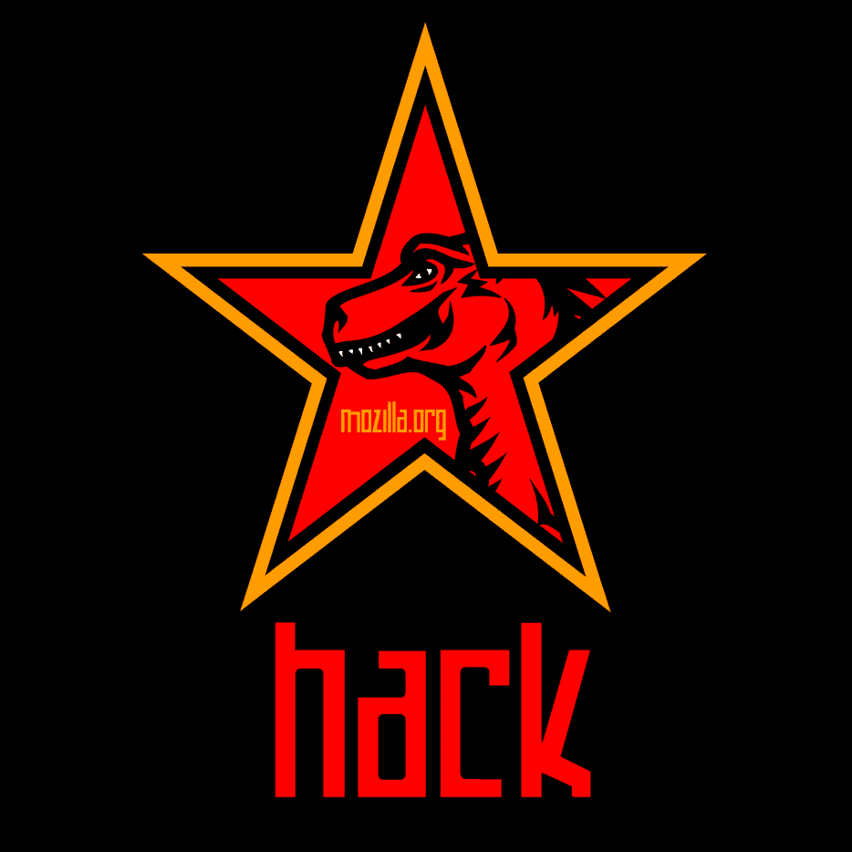
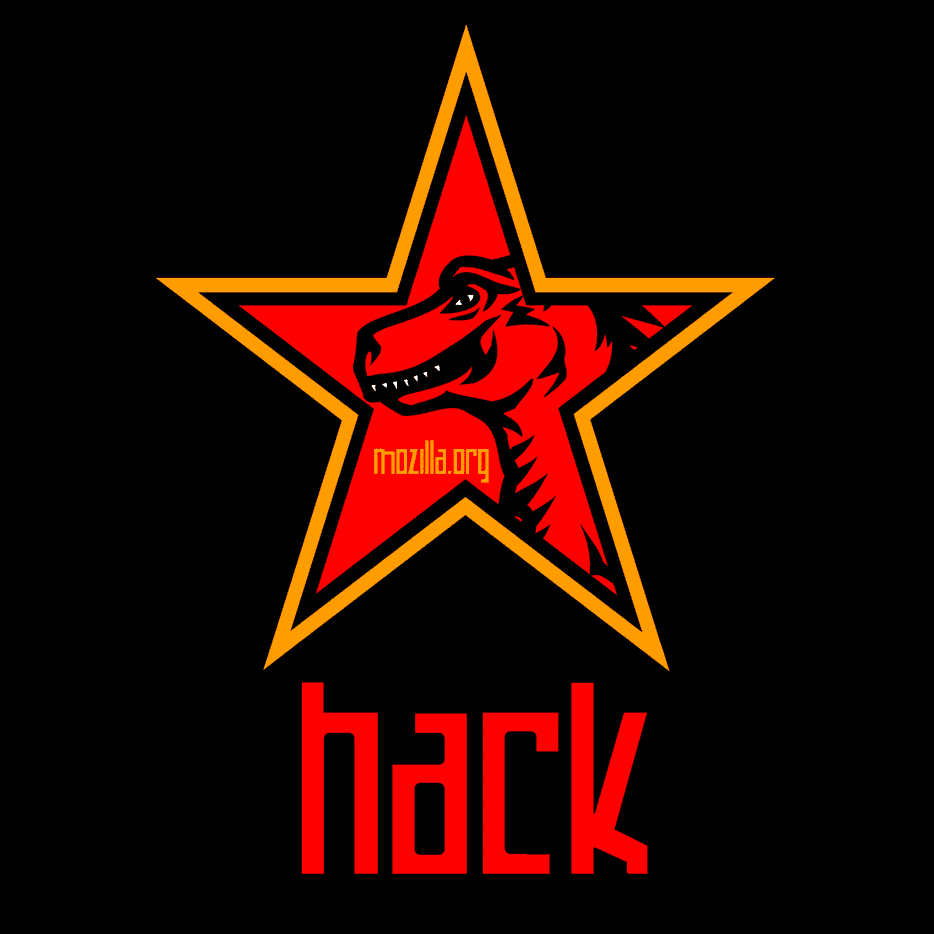
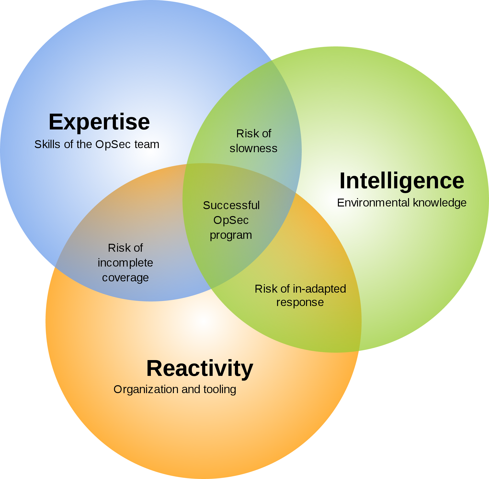

MIG
Mozilla InvestiGator
Distributed and Real-Time Digital Forensics at the Speed of the Cloud
Julien Vehent, Operations Security
|
That unfortunate commit...
git commit -a . && git push github master
$ mig file -path / -name "^\.boto$" -content "key_sample" -size "<1k" -maxdepth 5
We're building a better Internet
 

Strong startup/incubator mindset
- Experiment & fail fast
- Minimalistic centralization
- Everyone can write and host a website...
- ...sometimes using operational standards
Security at the perimeter doesn't work when your infrastructure lives all over the internet
- 400+ active websites & services
- a dozen offices, hundreds of remotees
- 2 datacenters, tons of AWS accounts, heroku, rackspace, ...
all loosely connected only when needed
Incident Response at Mozilla
Need for a strong
Operations Security group

3 OpSec problems
| Visibility | too many systems doing too many things in too many ways. Need to see them all. |
| Reachability | we don't have accounts or network accesses to all systems. |
| Heterogeneity | every snowflake system is investigated in its own special way. |
99% of investigations are simple
- "Hey Systems, seen that <file|ip|process|user> lately?".
- "Nope"
- "Nope"
- "Nope"
- "Oh yeah, just yesterday!" <--- OMG DEFCON 1!!!
The faster we run investigations,
the more we will investigate.
- bob left the company, did we revoke all his accesses?
- massive libstuff1 vulnerability, is it used anywhere?
- found IP 13.37.66.66 brute forcing the VPN, check other nodes to see if it's connected
- jean-kevin put some AWS key on pastebin, is it configured anywhere?
- anyone remembers that weird host that was running an anonymous proxy?
We couldn't find a tool we liked,
so we built one
Demos!
Locating a cron job that contains a password
Basic investigation workflow

Got any private keys in those home folders?
Is that botnet IP connected anywhere?
Scan processes memories for a regex
Digital forensics on steroids
Massively Distributed means Fast.
Simple to deploy and Cross-Platform.
Secure! Don't trust until you verify.
Don't spook on data, respect Privacy.
Massively distributed
Central platform only passes messages around.
Investigation & computation is done on the agents.
Small infrastructure footprint
means easier to deploy and operate.
Simple to deploy
One static binary, no dependencies.
Configuration is built-in or deployed via provisioning.

As secure as PGP, so pretty good
{
"name": "locate bad actor",
"target": "mode='daemon'",
"validfrom": "2015-05-27T00:29:29.038012Z",
"expireafter": "2015-05-27T00:30:59.038012Z",
"operations": [
{ "module": "file",
"parameters": {
"searches": { "s1": { "paths": ["/etc/cron.d"],
"contents": ["badpassword"]
}}}}
],
"pgpsignatures": ["wsBcBAABCAAQBQJVZRAlCRCj1lIXO3..."],
"syntaxversion": 2
}
Privacy: I used to be a spy...
|
Doing forensics without full access to all data is hard, but not impossible. Agents do the work and return answers without raw data. |
Internals
REST API receives signed JSON messages
distributed to agents via RabbitMQ
and stored in a Postgres database.
Architecture of the Agent
+-------+ [ - - - - - - A G E N T - - - - - - - - - - - - ]
|command|+---->(listener)
+-------+ |(2)
^ V
|(1) (parser)
| + [ m o d u l e s ]
+---------+ | (3)|----------> op1 +----------------+
|SCHEDULER|+---+ |------------> op2 +--------------|
| |<---+ |--------------> op3 +------------|
+---------+ | +----------------> op4 +----------+
| V(4)
|(6) (receiver)
| |
| V(5)
+ (publisher)
+-------+ /
|results|<-----------------------------------------
+-------+
Security of the Agent
Agent only runs something if these conditions are met:
- action has a valid PGP signatures
- issued by trusted investigators
- who has ACL access to a given module
multiple signatures required to run sensitive modules
Security of the platform: API
REST API, uses IdFix PGP Token authentication
curl -H 'X-PGPAUTHORIZATION: 1;2015-05-28T15:04:05Z;111;owEBYQGe/pANAwAIAaP...' https://api.mig.example.net/api/v1/
PGP already needed to sign actions
Using it to auth on the API avoids needing another username/password/access key.
Security of the platform: Database
Typical PostgreSQL protections (TLS, credentials, GRANTs)
Minimalistic attack surface:
- Investigator keys are not stored in DB
- Results are in DB but never contain raw data, minimalize impact of leak
Security of the platform: Scheduler
Somewhat complex code path to move messages around BUT:
- No user interaction
- No way to tamper with signatures
If it breaks, we're sad, but it doesn't compromise systems across the infrastructure.
Security of the platform:
Most exposed component (public).
Requires AMQP over TLS with client certs and credentials.
Tightly controlled RabbitMQ ACLs, but hard to write/audit.
Complex investigations:
write JSON directly
many samples at
https://github.com/mozilla/mig/tree/master/actions
Example: Shellshock IOCs
MIG as a security pipeline
- Vulnerability scanning with mozilla/mozoval
- Syscall auditing (auditd) with mozilla/audit-go
- Log inspections (OSSEC style)
- Network monitoring (distributed NSM) using GoPacket
Questions?
## ## _.---._ .---.
# # # /-\ ---|| | /\ __...---' .---. '---'-. '.
# #| | / || | /--\ .-''__.--' _.'( | )'. '. '._ :
# # \_/ ---| \_ \_/ \ .'__-'_ .--'' ._'---'_.-. '. '-'.
### ~ -._ -._''---. -. '-._ '.
# |\ |\ /---------| ~ -.._ _ _ _ ..-_ '. '-._''--.._
# | \| \ / |- |__ | | -~ -._ '-. -. '-._''--.._.--''.
###| \ \/ ---__| | | ~ ~-.__ -._ '-.__ '. '.
##### ~~ ~---...__ _ ._ .' '.
# /\ --- /-\ |--|---- ~ ~--.....--~
# ### /--\ | | ||-\ //
#####/ \ | \_/ | \//__